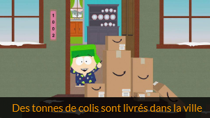

South Park est une série animée américaine diffusée à la télévision et à la demande depuis 1997, avec comme personnages principaux 4 garçons aux grandes personnalités. La série traite et critique des sujets d'actualité (comme les élections présidentielles, les attentats du 11 septembre et tout récemment la COVID-19). Elle est très controversée par les médias par la manière dont elle traite ces sujets (certains épisodes ont même été interdits de diffusion).
C'est le nom de l'épisode 9 de la saison 22 de la série. Dans cet épisode,les 4 amis préparent leurs vélos pour les présenter à la parade qui arrive. Ils demandent donc à leurs parents de leur commander des pièces sur Amazon. La demande d'achats en ligne est devenue importante au point que Jeff Bezos fait construire un entrepôt de sa marque dans la ville.
 Des tonnes de colis sont livrés dans la ville.Les rues sont désertées, les boutiques et les petits commerces tombent en ruine. Plus personne ne fait ses achats en ville. Les garçons ne se souviennent même plus du mot "magasin". Les commerçants sans emplois voient alors en l'entrepôt une opportunité de retrouver du travail. C'est à ce moment que l'épisode dénonce l'entreprise. Les travailleurs sont assimilés aux robots, l'usine pollue, on observe une variété de transports de colis (Camions, drones…). Une manifestation éclate d'ailleurs concernant les droits et les conditions de travail, les employés sont en grève.
 Jeff Bezos représenté dans South Park
Jeff Bezos représenté dans South Park
Jeff Bezos intervient alors et menace de supprimer le statut Prime des employés, service auquel ces derniers sont totalement dépendants. L'épisode aborde tous les services, en dénonçant par exemple l'atteinte à la vie privée liée à l'enceinte connectée Alexa, par laquelle le PDG parvient à espionner ses clients.
Cet épisode nous permet de mieux comprendre la politique de l'entreprise. On réalise alors la taille et l'importance d'Amazon dans le monde. On en apprend sur ses faces cachées : la charge de travail trop importante des employés ainsi que la pollution engendrée par les usines et les transports. Une dépendance aux services de l'entreprise peut aussi se créer.
Cependant, l'épisode survole un sujet plus méconnu encore, mais tout aussi important : La pollution numérique. Et oui ! Personne n'en a conscience, mais tout le monde y contribue. Par exemple, un seul mail non supprimé dans votre messagerie rejette des émissions de carbone dans l'environnement. Elle est représentée dans l’épisode par l’utilisation des services de streaming audio et vidéo que propose Amazon. Ces derniers utilisent grandement le stockage sur des centres de données, leur consommation en énergie est immense. J'aimerais alors vous en apprendre plus à ce sujet, dans le but de compléter ce que dénonce South Park et interpréter cette pollution invisible.